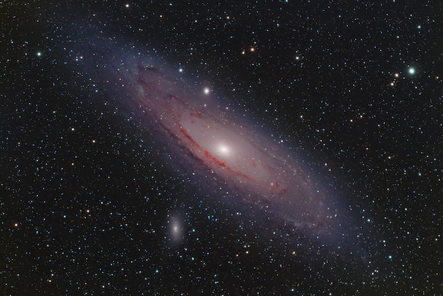
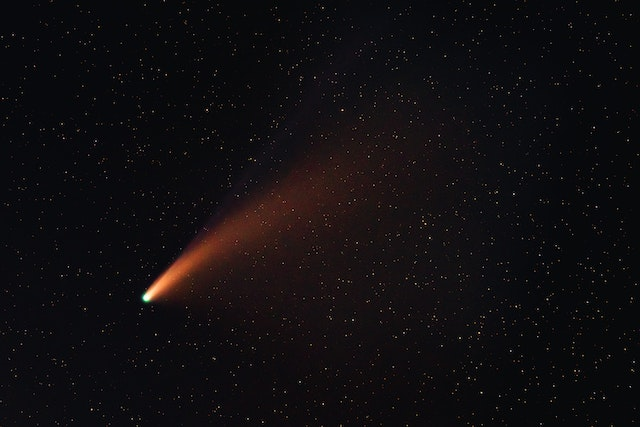
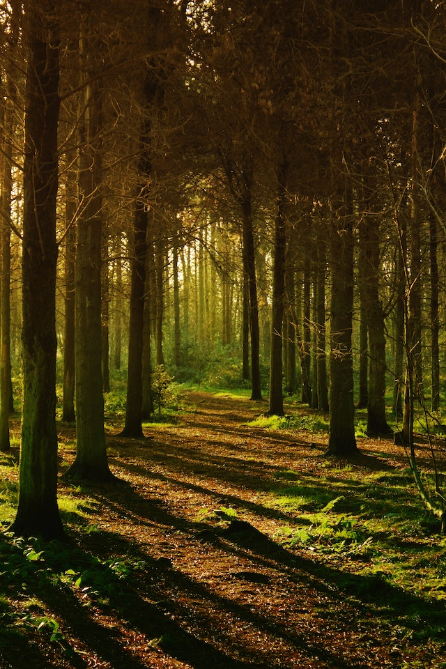
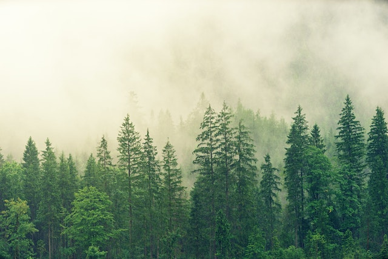
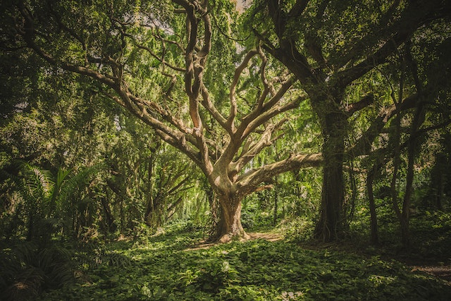

*All the additional information is %100 fictitious

Percy Black Hole
15 Million Years old
Locationed in the Artic System

Sozin's Comet
300,000 Years Old
This is it's second trip to Earth!

Fairy Forest
Jungleberry Trees
Locationed in Scottland

Rino Nation Park
Evergreens
Locationed in Wisconsin

God's Tear
200 Million Years Old
Named after looking like a tear
Locationed in the Holly Galaxy

Spooky Forest
Spooky Trees
Named after looking spooky
Locationed in Iowa

Ghost Nebula
15 Million Years Old
Locationed in the Invisible System

Drainer's Black Hole
5 Days Old
Locationed in the Aquarious System

Druid's Staff
Wizards's Tree
Locationed in Moon Park